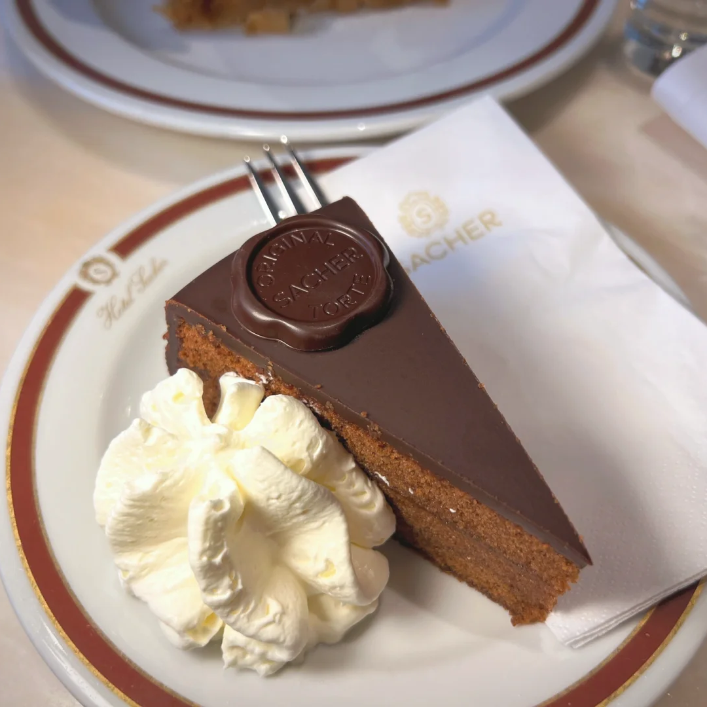
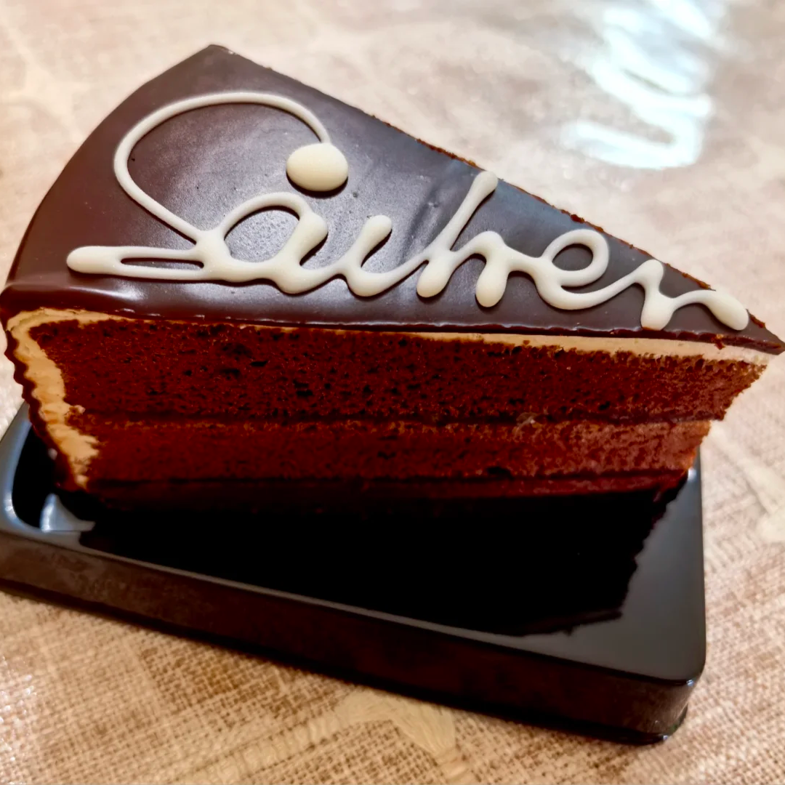

萨赫蛋糕



萨赫蛋糕（Sachertorte）是奥地利维也纳萨赫酒店独创的巧克力甜点，由两层巧克力蛋糕胚夹杏子酱制成，外层覆盖巧克力糖衣，以巧克力、牛油、杏子酱为主要原料。该蛋糕于1832年由16岁学徒弗兰茨·萨赫在奥地利首相梅特涅的宴会期间首创，因口感浓郁且无需防腐剂即可保存两周而闻名。 1876年，萨赫蛋糕随萨赫酒店创立成为招牌产品，其配方被列为奥地利国家机密。1963年，萨赫酒店与德梅尔咖啡馆达成和解，前者获“原版萨赫蛋糕”独家冠名权。现代萨赫蛋糕沿用传统工艺手工制作，每日需处理数千枚鸡蛋，圣诞期间产量达数万枚。截至2023年，萨赫蛋糕年销量约36万个，三分之一出口海外，并多次创下吉尼斯世界纪录。